Live Mineclonia material study in a disposable pool, rendered with Godot 4.5.1 Forward+. The baseline is the rough, transparent ice accepted in the previous pass. The procedural material adds internal fractures, cloudy regions, sparse air pockets and blue absorption, while retaining that surface's rough glints and depth ordering with water.
Each pair uses one frozen scene and swaps only the ice shader. Camera, sky, lighting and grading are identical within the pair. Water continues to animate. The two taller pillars use opaque packed and blue ice and retain their existing materials; the lake sheet and shorter pillar use the new shader.
Scope: this is a bounded optical layer, not measured iceberg thickness or nested refraction. The known camera-clipping band exactly at the waterline remains. These pool views do not establish landscape performance.
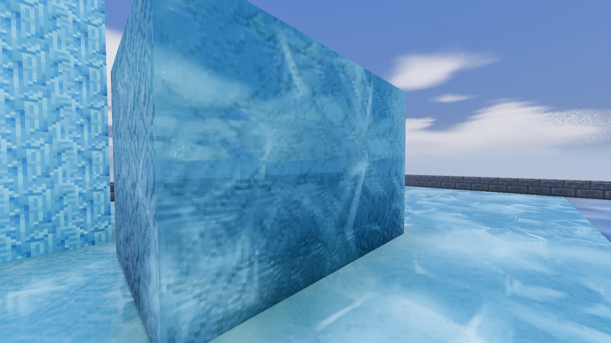
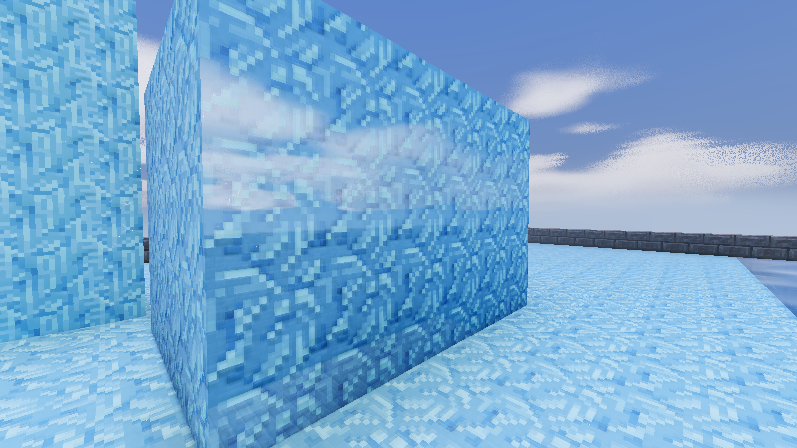
Previously acceptedProcedural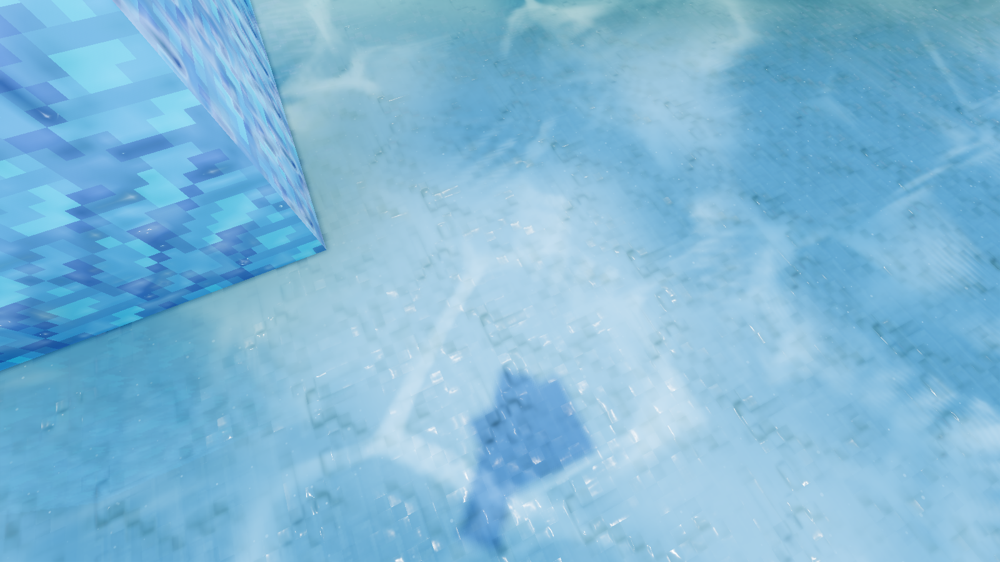
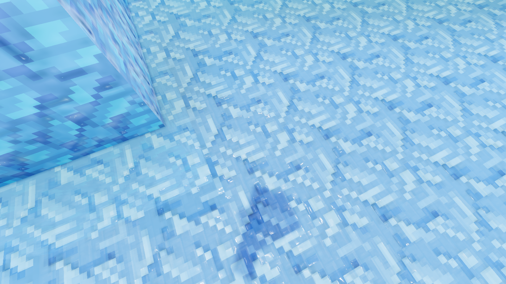
Previously acceptedProcedural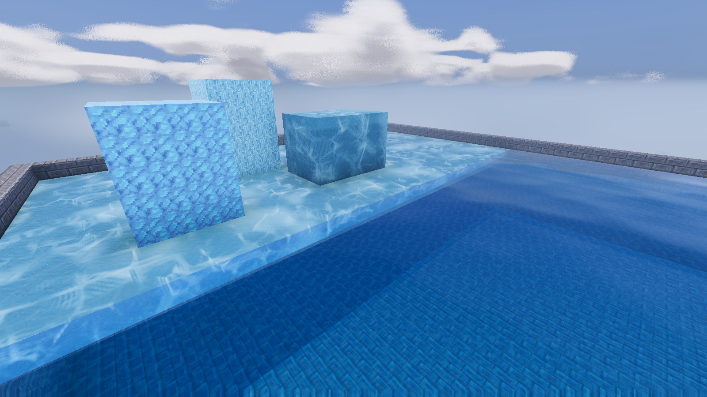
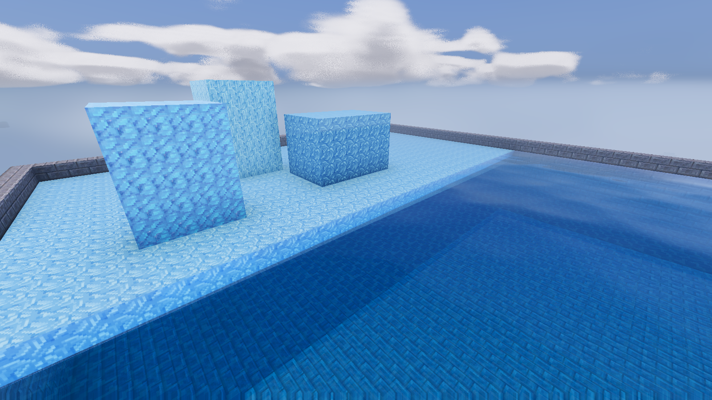
Previously acceptedProcedural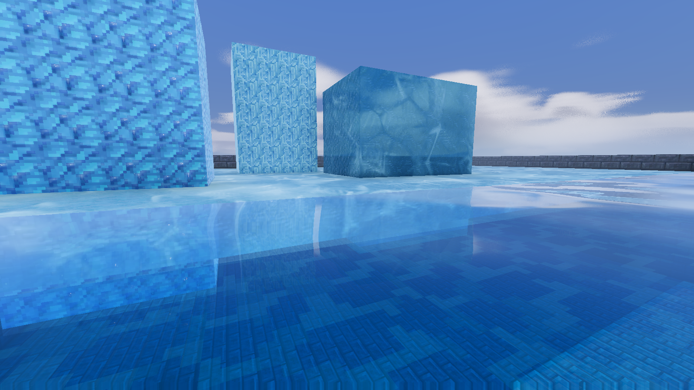
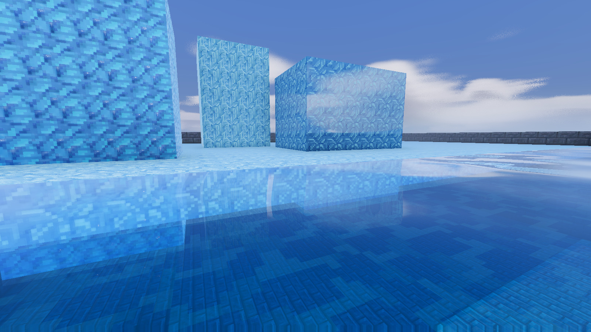
Previously acceptedProcedural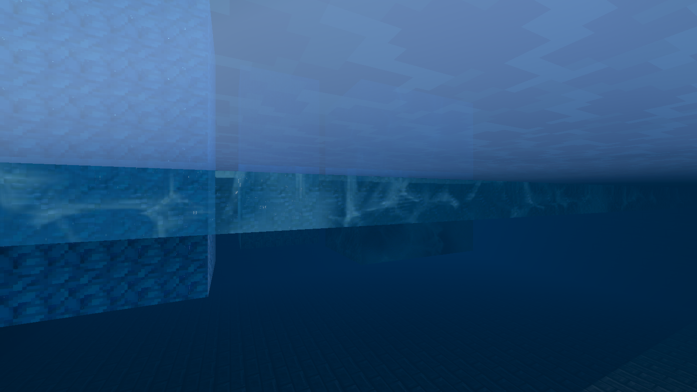
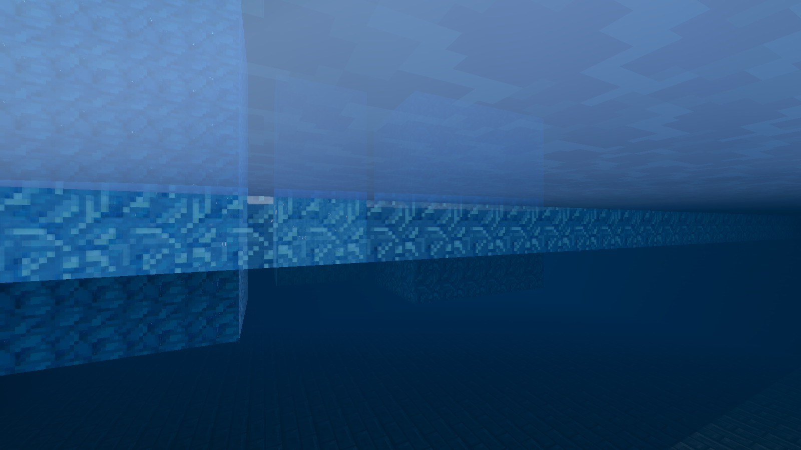
Previously acceptedProcedural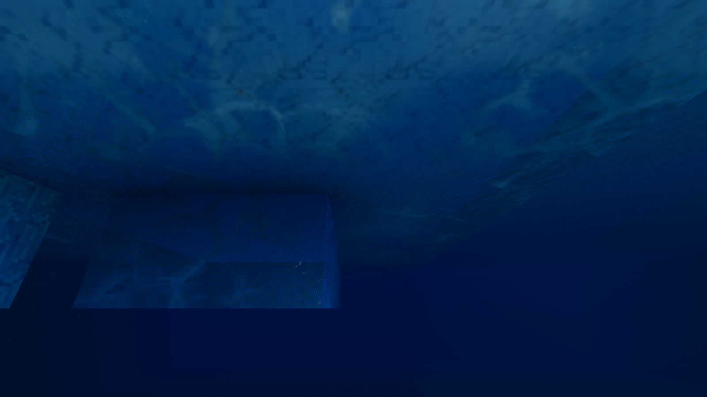
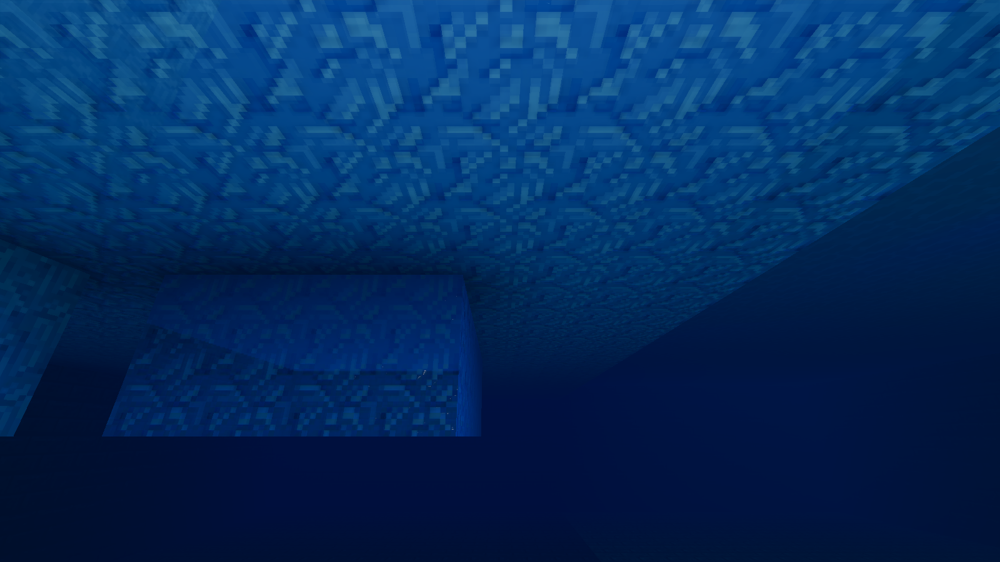
Previously acceptedProceduralNine rendered camera positions around the same ice. Scrub to inspect how the internal fractures move relative to the rough surface. This shows the procedural material only.
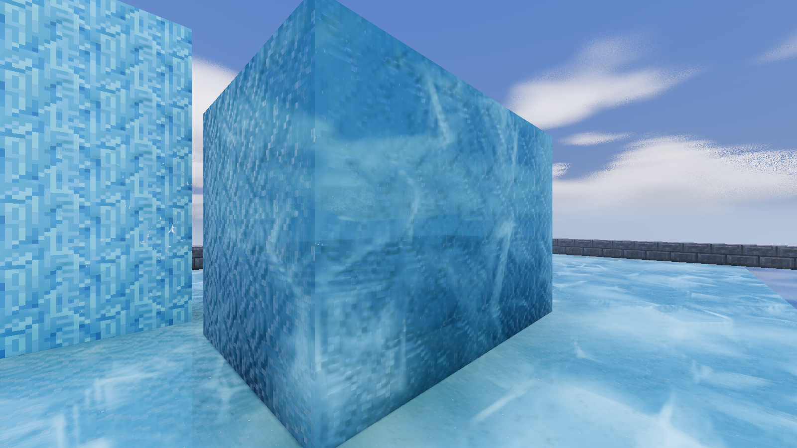
Camera metadataA fresh launch generated both 3D volumes and rendered the final material without shader replacements. The submerged sheet edge retains all 66 triangles. Above-water and underwater views passed; Solid ice and facing away both disable the extra background view. Checks and capture metadata. Fresh-launch captures: close-up, above water, below water, Solid ice option.
One 120-frame edge-view sample on an RTX 3090 at 1600x900 measured 8.73 ms median frame time with the accepted material and 8.82 ms with the procedural material. Main-view GPU times were 6.25 and 6.42 ms. The separate capture varied between runs, so this is a fixture result, not an exact isolated shader cost. Timing data.
The shader samples 1.15 nodes of optical depth along the face normal. It does not trace the actual exit face of the ice, so thin sheets and thick formations still share that approximation. Fracture detail is limited by the volume resolution and 24 samples; close views can expose the sampling. Surface relief remains shading, and its retained texture-derived facets repeat with the tile.
Compared source snapshots: accepted, procedural. Implementation notes.
{kind=link}
{kind=link}
{kind=link}
{kind=link}